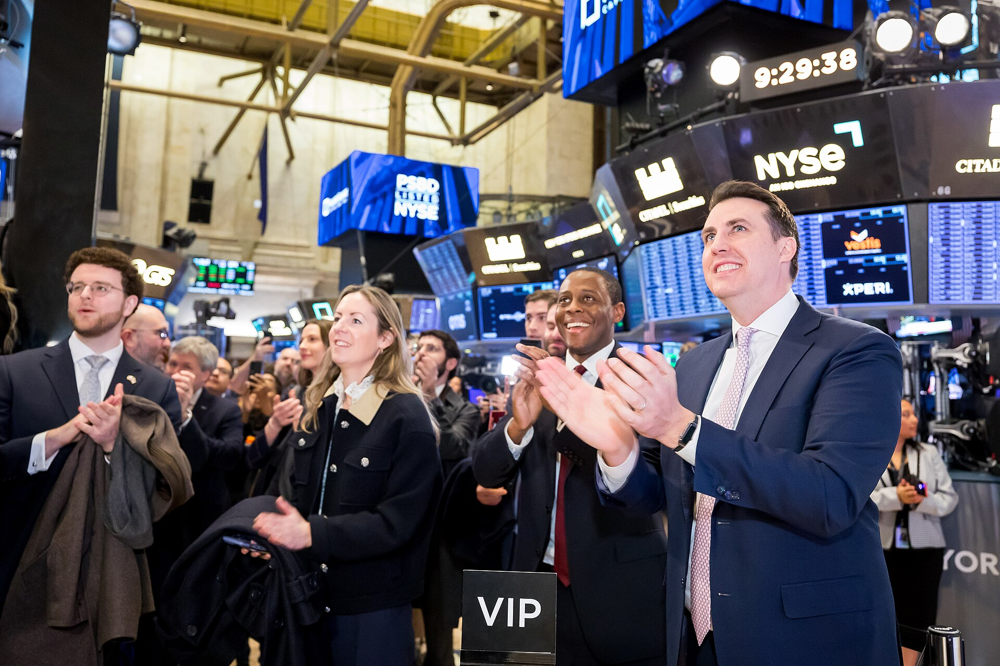
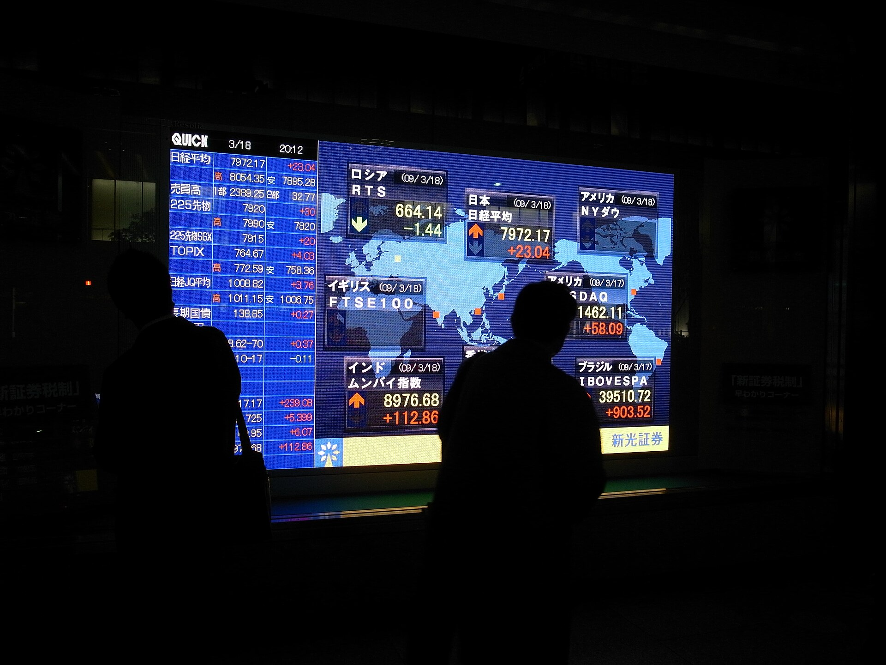
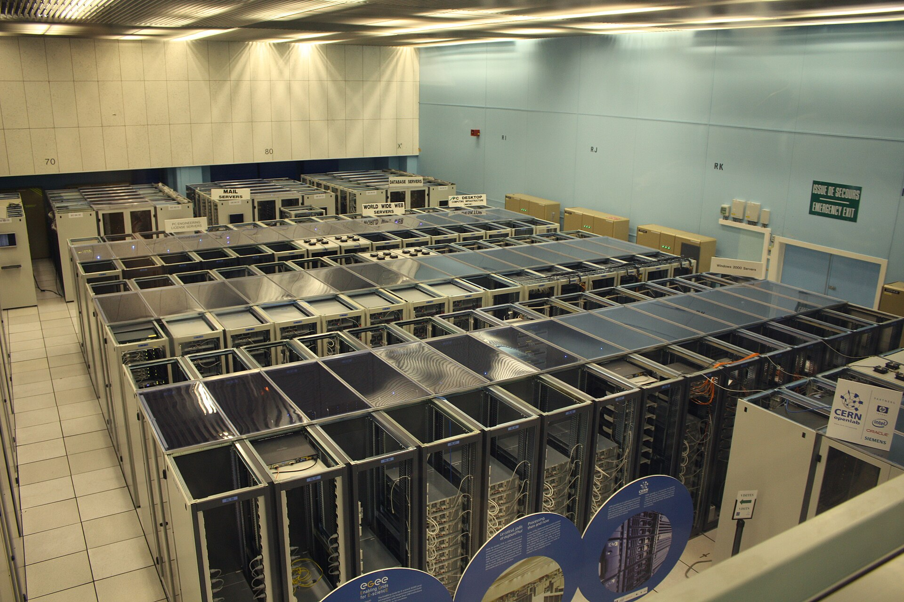
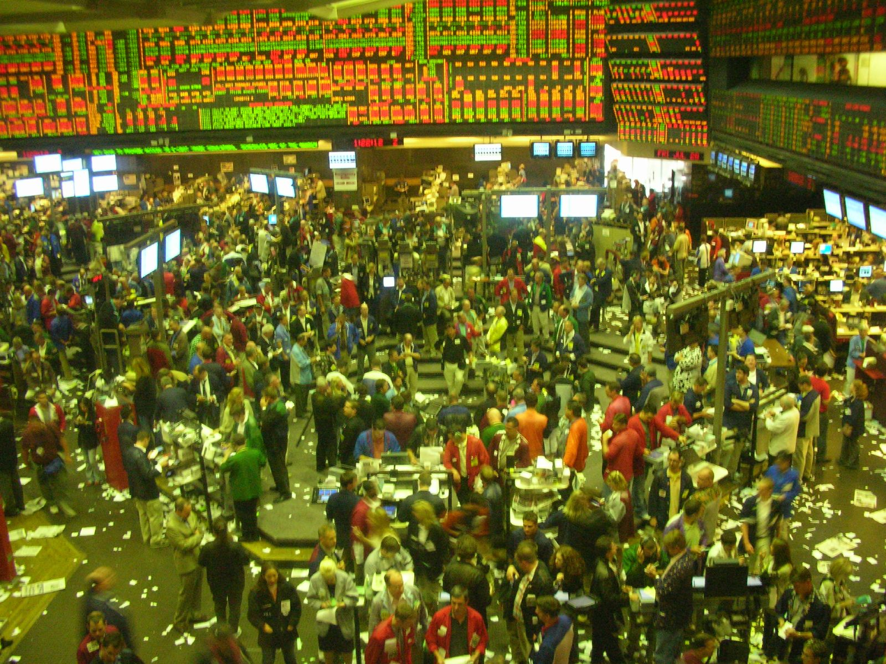
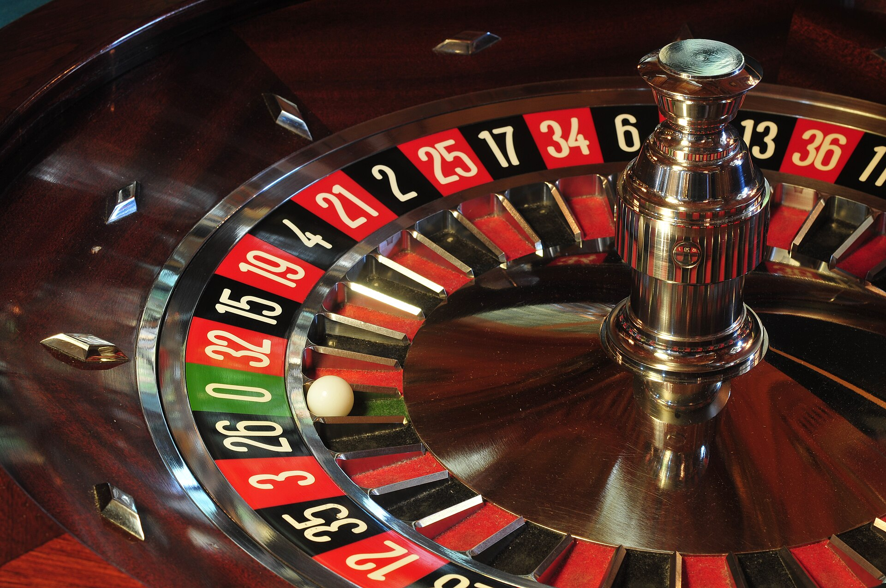
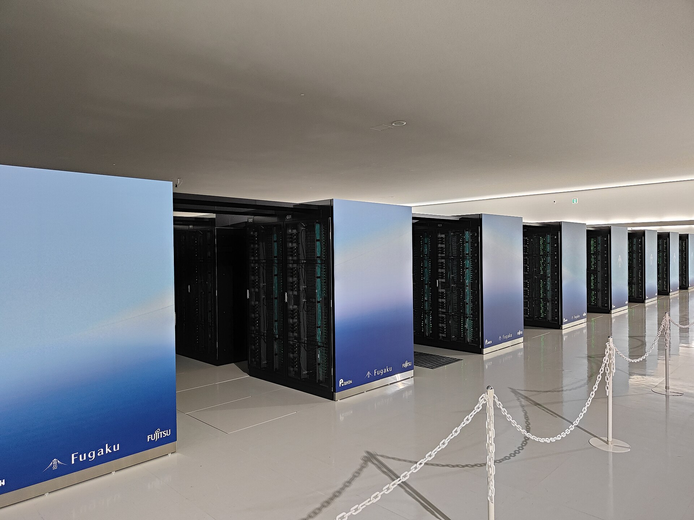

先从一组数字开始。1988 年到 2018 年这三十年里，有一只投资基金的年化收益率是 66%（扣除管理费之前）；即使扣掉它收取的高得离谱的费用，给到投资人手里的年化收益也有 39%。作为对照，沃伦·巴菲特——全世界最著名的投资人——在同一时期的年化收益大约是 20%。换句话说，这只基金用三十年的时间，把"股神"甩开了一倍以上。如果 1988 年你往里面放 1 块钱，三十年后它会变成大约 4 万块；同样的 1 块钱交给巴菲特，变成 200 多块。
这只基金叫大奖章基金（Medallion Fund），属于一家叫文艺复兴科技（Renaissance Technologies）的公司。但真正让它成为传奇的不是收益率，而是这家公司的构成：它的几百名员工里，塞满了数学家、物理学家、统计学家、计算机科学家和语音识别专家，却几乎不招金融专业出身的人。它的创始人詹姆斯·西蒙斯（James Simons）本人的上一份正经工作，是纽约州立大学石溪分校的数学系主任——再往前，他是为美国国家安全局破译密码的。
一群不懂金融的人，在金融市场上赚到了比所有金融专家都多的钱。这件事怎么解释？
这本书就是对这个问题的完整回答。答案概括起来只有一句话：他们做投资的办法，不是"研究公司然后凭判断下注"，而是把判断本身变成数据、变成模型、变成代码，让计算机按照写死的规则去扫描整个市场、自动做出成千上万次交易。这种投资方式，中文叫"量化"（Quantitative Trading，量化交易）。
这本书的假设读者是金融零基础的人——所有金融概念都会在使用它的那一刻就地解释。全书分三块：第一到第七章讲原理，量化策略是怎么造出来的、为什么会失效；第八到第十章讲行业，这个行业里有哪些玩家、它和社会的关系是什么、它为什么和 AI 缠在一起；第十一章和尾声讲人，这个行业招什么样的人、付什么样的钱、以及一个普通学生离它有多远。下面是路线图。
什么是量化：把判断从人脑搬进代码
要理解量化，最快的办法是先看它的反面——主观投资。一个典型的主观基金经理的一天大概是这样的：早上读券商研报和财经新闻，上午参加上市公司的电话会或者飞去实地调研，下午和团队讨论"这家公司管理层靠不靠谱""这个行业明年景气度如何"，最后在脑子里形成一个模糊的判断——"这家公司不错，估值也合理"——然后下单买入。
注意这个过程的两个特征。第一，判断的载体是人脑。所有的信息在一个人（或几个人）的头脑里汇合、发酵、产出结论。第二，规则是模糊且不可复制的。什么叫"不错"？什么叫"估值合理"？换一位基金经理，换个心情，换一段人生经历，结论可能完全不同。这种投资方式的上限很高——巴菲特就是它的化身——但它天然有几个弱点：一个人类基金经理能深度覆盖的公司不过几十上百家；人会疲劳、会恐慌、会贪婪、会在大牛市里舍不得卖、在大跌里不敢买；而且这套手艺极其依赖个人天赋，几乎无法规模化传授。
量化做的事情，是把这套判断过程从人脑搬进计算机。把"什么是好公司""什么时候该买"翻译成精确的、没有歧义的数学规则和代码，然后让程序去扫描全市场几千只股票，自动打分、自动下单、自动风控。人不再逐笔做决策，而是写"做决策的规则"。
决策主体：基金经理的大脑
信息来源：财报、调研、新闻、人脉
覆盖范围：几十到上百家公司
决策规则：模糊、依赖经验、不可复制
弱点：情绪、疲劳、容量小、手艺难传承
化身：巴菲特、彼得·林奇
决策主体：写在代码里的规则
信息来源：行情数据、财报数据、另类数据
覆盖范围：全市场几千只股票同时扫描
决策规则：精确、可回测、可复制、可迭代
弱点：模型会过时、规律会失效、极端行情失灵
化身：西蒙斯、D.E. Shaw、幻方、九坤
由此可以得到一个完整的定义：量化交易，是用数学、统计学和计算机方法，从数据中提取规律，把规律固化成可以自动执行的策略，并让计算机自动完成交易的一类投资方法。这个定义里有三个缺一不可的要素——数据（原料）、模型（提炼规律的机器）、自动执行（规律落地为真金白银的动作）。缺了最后一个，就只是"用 Excel 研究股票的研究员"，而不是量化——这也正是它叫"量化交易"而不叫"数量分析"的原因。
它不是黑天鹅，是七十年技术演化的终点
量化看起来像突然冒出来的新物种，其实它是一条七十年的技术长河。每一个里程碑都遵循同一个模式：金融市场里多了一项数学工具或计算能力，就有人用它来改写"投资"这件事。
把这条时间线压缩成一句话：量化不是某个天才的发明，而是数学工具、数据积累和算力三样东西一起变便宜之后的必然产物。1952 年马科维茨的公式在纸上，1973 年 Black-Scholes 在计算器里，2000 年代策略在服务器里，2020 年代策略在 GPU 集群里。载体一直在变，内核从来没变——用系统性的方法，替代直觉性的判断。
还要澄清一个中文语境里的用词问题。"量化"这个词在中文财经新闻里常常狭义地指"量化私募"（比如"量化砸盘"这类标题里的量化），但它的广义含义覆盖所有用同一套方法论做事的机构：公募基金的指数增强团队、券商的金融工程研究部、银行的风险管理部门。第八章会把这张版图完整展开。在那之前，先补一堂所有后续章节都需要的金融词汇课。

看懂市场：一堂最小金融课
这一章是地基，讲完后文不再重复解释。每个概念都按"它是什么 + 量化为什么在乎它"来讲。如果读投资入门那本《投资入门：从一股股票到一套认知》时打过底，这一章会非常快；如果没有，慢慢来，值得。
第一层：交易是怎么发生的
第二层：A 股的两条特殊规则
第三层：指数、期货与杠杆
十二个词讲完了。最后搭一个把全书串起来的框架——Beta 与 Alpha，全书最重要的两个希腊字母。
买一只跟踪沪深 300 的指数基金，大盘涨 10% 你赚 10%，大盘跌 10% 你亏 10%。这部分收益叫 Beta——它是"市场本身"给的，躺着就能获得，不需要任何本事，也不该为此付高额管理费。Alpha 则是 Beta 之外、靠真本事多赚出来的那部分：市场涨 10%，你的策略赚了 14%，多出来的 4% 就是 Alpha。量化机构向客户收 20% 的业绩提成，卖的就是这多出来的一小块——Alpha 是整个量化行业唯一的产品。它是谁生产的、为什么会被生产出来、又为什么会衰减，是第四章到第七章的主线。

量化 ≈ 机器学习
第二章留下了主线问题：Alpha 是怎么被"生产"出来的？现在给出本书最核心的一个认知：一条量化策略的底层，就是一个机器学习项目。这不是比喻，是实质同构——量化策略要解决的问题，就是一个标准的监督学习预测问题：给定每只股票今天的各种数据（特征 X），预测它未来一段时间的收益率（标签 y），预测分数高的买入，分数低的卖出或回避。
如果你学过机器学习，下面这张对照表会让整个量化行业瞬间"祛魅"——每一个听起来神秘的行话，都是你熟悉概念的换皮：
| 机器学习 | 量化交易 | 说明 |
|---|---|---|
| 数据集 | 行情数据、财报数据、另类数据 | 全市场所有股票几十年的日频/分钟级价格与成交量、财务报表、分析师预期，甚至卫星图像、电商流水、招聘启事 |
| 特征工程 | 因子（factor） | 从原始数据构造出的指标："过去 20 天涨幅""市盈率倒数""换手率"。一个因子 = 一个选股理由的数学化 |
| 模型训练 | 策略研究 | 学习"什么特征的股票未来会涨"，从线性回归到 GBDT 到神经网络 |
| 验证集 / 测试集 | 回测（backtest） | 用历史数据严格模拟策略每一天的表现，看能赚多少 |
| 上线部署 | 实盘 | 接入券商的程序化交易接口，真金白银自动运行 |
| 过拟合 | 回测过拟合 | 策略在历史上赚翻、实盘亏惨——量化行业的头号死因 |
| 模型漂移（concept drift） | 因子失效 / Alpha 衰减 | 数据分布变了，模型要重训——第七章整章讲这个 |
| 评估指标 | 夏普比率、最大回撤、IC | 相当于 ML 里的准确率、AUC——本章后半逐一解释 |
这个同构关系解释了一个行业现象：量化机构的研究岗，最喜欢的简历画像是"CS/数学/物理出身 + 会机器学习 + 懂一点金融"，而不是金融科班。因为瓶颈技能在数理与工程一侧——金融知识是三个月能补的互补品，数理功底是三年补不出来的瓶颈品。第八章看创始人名单时，你会看到这条规律有多硬。
但有一个关键差异：信噪比
如果量化真的就是机器学习，那岂不是会训模型就能赚钱？差别在于数据的信噪比，这也是量化比标准 ML 难得多的根本原因。
训练一个图像分类器时，猫的照片里绝大部分像素都在"表达猫"——信号强、噪声弱，模型准确率可以推到 95% 以上。而股票价格里，绝大部分波动是随机噪声，可预测的微弱规律可能只占百分之几。量化里衡量一个因子预测能力的指标叫 IC（信息系数）：因子分数与未来收益的相关系数。在 ML 里，相关系数 0.03 约等于没有关系，可以直接扔掉；在量化里，IC 稳定为 0.03 的因子已经是有价值的因子——因为你可以同时下注几千只股票、每天重复下注，大数定律会把这个微弱的优势一点点兑现成收益，就像赌场靠 51% 的胜率赚钱一样。
这里埋着全书的暗线：因为信噪比极低，过拟合的诱惑和危害被同步放大。当你在噪声占 95% 的数据上调参，你非常容易把噪声当规律学出来——这就是第六章"回测的陷阱"的全部内容。而就算你挖到了真规律，全世界的同行也在挖同一个，规律会被挖干——这是第七章"Alpha 衰减"的全部内容。量化研究的难，不在模型不够先进，而在对手是噪声本身，以及所有和你一样聪明的人。
顺带一提，这条"低信噪比 + 海量重复下注"的赚钱逻辑，和赌场是同构的。赌场对单一个赌客的胜率优势只有几个百分点，单日可能赔钱，但几万次下注累积下来必赚。历史上真正把这条逻辑想透的第一人正是第一章的爱德华·索普——他先验证了"可以用数学在 21 点赌桌上建立可兑现的微弱优势"，然后把同一套思想平移到了华尔街。从赌场到交易所，变的只是数据来源，不变的是大数定律。

一条策略的诞生
这一章走一遍量化策略从想法到实盘的完整流水线。一共五步，每一步只依赖上一步，每一步都有对应 ML 里你熟悉的环节。走完这条流水线，你就掌握了量化研究岗日常工作的骨架。
第一步：提出一个可以被检验的问题
一切从一个假设开始，而且这个假设必须能翻译成数学。比如："过去 20 天涨得多的股票，未来 20 天是不是倾向于继续涨？"注意这个问题的结构——它就是监督学习的标准格式：特征 X 是"过去 20 天涨幅"，标签 y 是"未来 20 天收益率"。提出假设的灵感可以来自任何地方：学术文献、市场观察、行为金融学研究（"人类有追涨杀跌的偏差，那惯性大概率存在"），甚至数据挖掘的暴力搜索。但能被留下的假设，通常背后得有一个"为什么它会存在"的解释——纯数据挖掘出来、讲不出任何道理的规律，大概率是噪声（第六章展开）。
第二步：构造因子——选股理由的数学化
把假设变成具体的计算公式，就是一个因子。几个经典例子：
学界和行业几十年下来，公开发表过的因子有几百个（被戏称为"因子动物园"，factor zoo），头部私募的内部因子库则有上万甚至几十万个，其中大量是用机器学习从量价数据里自动挖掘出来的。但万变不离其宗：一个因子，就是一个"选股理由"被翻译成了一个可以对全市场每只股票每天计算的数。
第三步：合成信号——几百个弱因子变成一个强分数
单个因子的 IC 只有 0.03 上下，太弱，撑不起一个策略。真正的策略把几百上千个因子加权合成一个总分：
这一步的输出，是全市场五千多只股票每只股票一个预测分数。它和你熟悉的推荐系统打分、搜索引擎排序是同一类东西——本质是一个排序问题：不求预测准每只股票的收益率数值，只求把"未来会跑赢的"排到前面。模型每天收盘后刷新一遍分数，第二天按分数调仓。
第四步：回测——在历史的沙盘里严格演练
策略写好之后，绝不能直接拿真钱试。先用历史数据回测：把时钟拨回十年前，严格模拟每一天——当天收盘后只用"当天及之前确实可得"的数据算分数，按分数构建组合（比如买入分数最高的前 100 只，等权持有），第二天按真实成交价调仓，逐笔扣除佣金、印花税和冲击成本，一天天滚到今天，画出一条净值曲线。
回测报告里的三个核心指标，都是 ML 评估指标的亲戚：
第五步：实盘——以及永不停机的监控
回测通过的策略接入券商的程序化交易接口，真金白银跑起来。但这不是终点——实盘是另一场实验的开始。策略上线后要持续监控：实际成交和回测假设差多少？因子的 IC 是不是在衰减？市场环境是不是变了？因子失效了就要重新研究、重新训练——这和 ML 里的模型漂移（concept drift）是同一个东西，只是金融市场的漂移更快、更敌对你（第七章细说）。所以量化研究的日常不是"找到一个圣杯然后躺着"，而是一个永不停止的循环：发现 → 衰减 → 再发现。
一个玩具级实例：双因子选股
把上面五步压缩成一个可以心算的最小例子。假设你只用两个因子构造策略：
然后回测 2016–2025 这十年：每月末换仓一次，每笔交易扣万分之三的佣金和千分之一的印花税，卖出价按次日开盘价算（避免"看到收盘价又按收盘价成交"的作弊）。十年后你得到一条净值曲线，比如：年化 14%，同期中证 500 指数年化 6%，最大回撤 28%，夏普 0.9。那么这条策略的 Alpha 就是 14% − 6% = 8%——这 8% 就是你可以拿去见客户（或者见面试官）的东西。
真实的机构策略在这个骨架上复杂几个数量级：因子从 2 个变成 2 万个，线性加权换成深度学习，月度调仓换成日内调仓，还要叠加行业中性化（不让组合过度押注某个行业）、风格暴露控制、组合优化器、交易算法拆单（把一个大买单拆成几百笔小单以减少冲击成本）。但骨架就是上面这五步。第十一章的学习路径里，这个玩具例子就是你应该亲手复现的第一个项目。
最后看一眼这条流水线的物理形态。策略不是运行在谁的笔记本电脑上的：数据从交易所和供应商的行情专线流进来，清洗后落进 PB 级的数据库；研究员在集群上跑回测；实盘策略部署在交易所隔壁的托管机房里，延迟按微秒计较。一家头部量化私募，本质上更像一家中等规模的科技公司，只是它的产品恰好是交易指令。

策略流派地图
"量化"内部的差别，比"量化与主观"之间的差别还大。给这个行业分类，最好用的问题是：这笔钱到底是从哪里赚到的？按答案分，主要有五大流派。
流派一：股票多因子 / 指数增强——国内的主力
就是第四章那条流水线的工业化版本：持仓几百到上千只股票，按因子分数选股，持有几天到几周，赚"选股"的钱。它的商品化形态叫指数增强（指增）：锚定一个指数（中证 500、中证 1000），持仓大致跟随指数，但用因子分数在成分股内外做增强，目标是"指数涨 10% 我赚 15%，指数跌 10% 我只亏 7%"——每年稳定跑赢指数几个点到十个点。中国头部量化私募（幻方、九坤、明汯、灵均、衍复）管理规模都在数百亿到千亿量级，主力产品就是各类指增。它和大众想象中的"高频机器人"完全是两回事——它更像一台用机器做的、纪律严明的选股机器。
流派二：市场中性——把大盘涨跌"对冲掉"
指增的净值跟着大盘坐过山车，有些客户不想要这个波动。于是有了中性策略：买入一篮子高分股票（多头），同时做空等金额的股指期货（空头）。这样大盘的涨跌被对冲掉了——组合里股票跌的钱，股指期货的空头赚回来。剩下的收益就是纯粹的 Alpha：股票篮子跑赢指数的那部分，减去做空期货的成本。中性策略卖的是"与大盘无关的绝对收益"，代价是放弃牛市里大盘的涨幅，并且多了一个风险敞口——如果"高分股票篮子"本身集体出问题（比如 2024 年 2 月小微盘踩踏，第七章），对冲保护不了它。
流派三：统计套利——赌"偏离的关系会回归"
找到两个逻辑上应该同涨同跌的东西（两家业务几乎相同的公司、同一只商品的近月远月合约、ETF 与它的一篮子成分股），当价差异常拉大时，买入相对便宜的、卖空相对贵的，赌价差回归历史均值。这类策略不看方向，只看"关系"。它的本质是在赌相关性结构的稳定性——风险也在这里：万一关系真的破裂了呢（一家公司爆出独有丑闻、商品基本面突变）？2007 年 8 月的"量化地震"就是全行业的价差同时不回归（第七章）。
流派四：CTA——在期货市场上追趋势
CTA（管理期货）把信号方法用在商品期货、股指期货、国债期货上，主流是趋势跟踪：价格涨破了某个阈值就追多，跌破了就追空，"截断亏损，让利润奔跑"。可做多可做空、几十个品种分散，所以 CTA 和股市的相关性很低，常被拿来和股票策略组合搭配——"股票亏钱的时候它往往赚钱"。2022 年股市大跌而商品大波动时，CTA 就是少数赚钱的门类。
流派五：高频交易——完全不同的物种
前面四个流派持仓以天、周、月计；高频交易（HFT）的持仓时间是毫秒到秒，赚的不是"选股"的钱，而是市场微观结构的钱。它又分三种生意：
高频的核心资产不是模型而是速度：服务器托管在交易所机房隔壁，行情专线用直线光纤，交易逻辑烧进 FPGA 芯片抢微秒。这是一个利润高但容量小、门槛极高的军备竞赛市场。而且它远没有舆论想象的那么大：官方口径下程序化交易约占 A 股成交额的三成，业界估计其中纯量化基金的主动成交约 15%–25%，而严格意义上的高频交易只占个位数百分比，且主要集中在期货市场。换句话说，新闻标题里翻云覆雨的"高频量化"，在整个市场里其实是一小撮。
| 流派 | 持仓时间 | 赚的是什么钱 | 主要风险 | 容量 |
|---|---|---|---|---|
| 多因子 / 指增 | 天 ~ 周 | 选股 Alpha（全市场撒网） | 因子失效、风格暴露 | 大（千亿级） |
| 市场中性 | 天 ~ 周 | 纯 Alpha，剥离大盘涨跌 | 对冲成本、多头篮子集体出事 | 中 |
| 统计套利 | 秒 ~ 天 | 价差回归均值 | 相关性结构破裂 | 中小 |
| CTA | 天 ~ 月 | 期货趋势与期限结构 | 震荡市反复打脸 | 中大 |
| 高频（做市/套利/盘口） | 毫秒 ~ 秒 | 微观结构：价差、速度、信息 | 军备竞赛、监管、技术故障 | 小 |
把五大流派放在一条"频率光谱"上，这张地图就完整了：频率越高，赚的越偏"执行与速度"的钱，策略容量越小，技术军备越重；频率越低，赚的越偏"认知与承担风险"的钱，容量越大，竞争越依赖研究深度。一家头部量化私募通常同时经营其中好几条产品线——九坤、幻方都是指增、中性、CTA、多策略全覆盖——因为不同流派的收益来源相关性低，拼在一起净值曲线更稳。
理解了流派，才能听懂财经新闻：媒体骂"量化砸盘"时，矛头通常指向指增和中性产品在极端行情里的集体调仓；而"高频收割"说的是另一个更小的群体；至于"量化封盘"，那是策略容量到顶的自我约束（第八章）。同一个词，三种生意。

回测的陷阱
量化行业里流传一句话："给我足够多的参数，我能在历史数据上回测出任何收益率。"这不是玩笑，是这个行业最深刻的职业风险。回测里年化 100% 的策略，实盘常常亏钱——而且亏钱的方式翻来覆去就那么几种，每一种都有名字。这一章把这张"死因清单"讲完，它是量化研究的真正的核心技术，比任何模型都重要。
死因一：前视偏差——偷看了答案
前视偏差（look-ahead bias）：回测时用了"当时实际上还没公布"的数据。最经典的翻车方式：用年报数据选股，但年报里的财务数字要到次年三四月才披露——你在回测里让"1 月 1 日的策略"看到了"3 月才发布"的数字，相当于考试时偷看了答案。隐蔽的版本更多：用了后来被"修正"的历史数据（上市公司会重述财报）、用了指数成分股的"当前名单"去回测十年前（当时那些股票根本不在指数里）。这是新手的第一大错，也是回测框架设计要死守的红线：每一个数据点都必须带上"它在哪一天对公众可见"的时间戳。
死因二：幸存者偏差——只数活下来的
回测只用"今天还活着的股票"做历史模拟，就自动剔除了当年退市、暴雷、亏光的那批公司——收益被系统性高估。二战时有个著名段子：统计学家研究返航轰炸机上的弹孔分布，想加固弹孔多的部位，而正确的结论恰恰相反——要加固的是弹孔少的部位，因为那些部位中弹的飞机没能回来。这就是幸存者偏差。量化里的对应物：一份"干净"的历史股票数据库必须包含所有退市股票，包括它们退市前最后那段崩盘的价格。
死因三：过拟合——量化行业的头号死因
过拟合你在 ML 里学过：模型把训练集里的噪声当规律背了下来。但在金融里，这个问题被放大了一个数量级，原因在第三章说过：金融数据的信噪比极低。价格里百分之九十几是噪声，当你在十几年的历史数据上反复调参——"20 天动量不行，试试 17 天？加上换手率过滤？周三不交易？"——你总会找到一组参数让历史净值曲线完美上扬。这不是发现了规律，这是用足够多次尝试，从噪声里筛出了一条好看的曲线。
统计学家管这叫多重比较问题：假设你独立测试 1000 个纯属随机的策略，按 5% 的显著性水平，平均会有 50 个"显著赚钱"。这 50 个不是规律，是彩票中奖者。而量化研究员的日常工作流——试因子、调参数、看回测、再试——本身就是一台多重比较机器。防御手段和 ML 一脉相承但更苛刻：样本外测试（留最后几年数据，调参时一眼都不许看）、交叉验证的时间序列版本、对"试了多少次"做记录并惩罚、以及最重要的一条软约束——一个讲不出"为什么会存在"的策略，默认是噪声。
死因四：交易成本与冲击成本——免费的回测，收费的实盘
回测里"以收盘价买入"是一行代码；实盘里买入是真金白银地推高价格。每一笔交易都要先填三个坑：佣金、印花税，以及随资金量增长的冲击成本——你买一万股时价格纹丝不动，买一百万股时，你的买单会把卖一、卖二、卖三档一路吃掉，成交均价比下单时看到的价格高出一截。一个策略毛收益年化 15%，一年换手 100 倍，光摩擦成本就可能吃掉大半。高频策略对这个最敏感：单笔利润以万分之几计，成本假设差一点点，回测和实盘就是盈亏之别。
死因五：Alpha 衰减——市场在看着你
就算你避开了前四个坑、规律是真的，它也会消失——因为别的机构也在找同一个规律，找到的人越多，规律被填平得越快。这条死因太重要，单列第七章整章。
把五种死因放在一起看，它们有个共同根源：回测是在一个静止的、已知的、不反抗的历史上作弊的机会，而实盘是在一个活着的、变化的、由对手组成的市场里求生。ML 里测试集不会因为你模型好而改变自己；市场里，你的对手会。所以回测的价值不是"预测未来收益"，而是"排除愚蠢的错误"——它能告诉你一个策略不应该上线，永远不能保证一个策略应该上线。
这一章也是理解量化公司招聘面试题的钥匙。面试里那些概率题、脑筋急转弯、"这个回测结果哪里有问题"的开放题，考察的正是这种对统计陷阱的直觉——在一堆好看的数字面前保持怀疑，是这个行业的核心职业素养。

Alpha 与衰减
第二章把 Alpha 定义为"跑赢市场基准的那部分超额收益"，并预告过：Alpha 是这个行业唯一的产品。管理费加业绩提成（行业惯例约 2% + 20%）卖的就是它。现在把这个产品拆开，看它由什么构成、为什么会"过期"，以及过期机制如何塑造了整个行业的形态。
Alpha 从哪里来：两种来源，两种寿命
有效市场假说说：如果价格已经反映了所有公开信息，那就不存在可预测的超额收益。现实里市场不是完全有效的，所以 Alpha 存在——但它有两个来源，寿命天差地别：
来源：市场暂时犯了错——某只股票被错误定价，你去纠正它。
寿命：短。快则几个月，慢则几年，一旦被发现就会被套利资金抹平。
例子：盘口短期失衡、事件驱动的高估低估、期权隐含波动率的错价。
性质：零和博弈，赚的是别人犯错的钱。
来源：你承担了别人不愿承担的风险，市场付钱请你承担。
寿命：以十年计。它不靠定价错误存在，很难被套利掉。
例子：小市值、低流动性股票的长期高收益——本质是"接盘侠补偿"。
性质：正和博弈，赚的是承担风险的报酬。
区分这两者，是一流研究员的核心工作：把自己挖到的东西，分成"矿"还是"风险补偿"。把风险溢价误当 Alpha 的人死得最惨——平时它像 Alpha 一样稳定产出，一旦风险兑现（流动性危机），它一次性连本带利收回去。2024 年 2 月的小微盘危机里，很多中性产品就是栽在这里：它们以为自己挖到了"小市值 Alpha"，实际上只是在收"流动性风险保费"，而保费总有赔付的那一天。
衰减的第一推动力：套利是自毁的
现在推全书最重要的一条因果链。一个因子能预测收益，意味着什么？意味着价格没有完全反映这个信息——存在错误定价。然后：
用 ML 的话说：市场是一个自适应的对手环境（adaptive environment）。你训练图像分类器时，ImageNet 里的猫不会因为被识别得准而改变长相；但市场价格是所有参与者行为的总和——你的模型越成功，它就越在改变生成数据的分布本身。这是量化与标准 ML 最深刻的区别，也是这个行业没有"圣杯"的根本原因。
第二推动力：拥挤交易与因子崩盘
量化行业有个结构性问题：所有人都在挖同一批矿。数据是公开的，教科书方法是相似的，聪明人的思路是收敛的——头部机构手里的高 IC 因子往往大同小异（小市值、反转、流动性……）。后果有二：
其一，衰减加速。同质化让"套利自毁"机制以全行业的速度运转。明汯创始人裘慧明有个公开的悲观判断：随着 A 股有效性提升，量化超额收益的衰减是不可逆的。十年前指增产品一年跑赢指数 20% 不稀奇，现在能稳定跑赢 5%–8% 已属优秀。
其二，因子崩盘（factor crash）。当极端行情触发所有人同时减仓时，大家卖的是同一批股票——买盘瞬间消失，价格垂直下落，跌得越快越多人触发风控线被迫卖出，形成踩踏。因子的正收益来自日常的缓慢套利，因子的巨亏来自流动性的瞬间枯竭。三次真实的崩盘：
第三推动力：市场制度本身在变
因子赚的一部分钱来自市场制度和行为偏差，而这些前提会被改写：注册制改革改变小股票的稀缺性，融券规则收紧改变对冲成本，程序化交易新规改变高频策略的盈亏平衡（第九章），散户占比下降改变"行为偏差"的总量。A 股过去十几年散户贡献了大部分成交，这是行为偏差的富矿；随着机构化加深，矿脉在变薄。策略不只是和市场博弈，还在和监管、和制度演化博弈。
衰减如何塑造了行业结构
最后把因果链闭环：既然 Alpha 必然衰减 → 机构必须持续发现新 Alpha → 这需要一条工业化的研究流水线：成百上千的研究员、上万个因子的因子库、快速的回测平台、成排的 GPU → 这就是量化私募疯狂招人、校招年年加码、实习生日薪上千的根本原因（第十一章展开）→ 也是封盘的原因：策略容量有上限，钱太多了自己的交易会把 Alpha 吃掉，所以头部机构历史上多次暂停申购（九坤 2020 年封盘、2025 年才重新开放募资）。
Alpha 衰减，是"利润机会吸引资本、资本消灭利润机会"的市场均衡机制。它决定了量化不是一门"找到圣杯然后躺着收钱"的生意，而是一台必须不断自我更新的研究机器。这也是为什么这个行业永远嫌研究员不够多——以及为什么你在宣讲会上听到"我们每年迭代 N 版模型、人均产出 M 个因子"时，应该听出它背后的焦虑，而不只是实力。
补充一个必须知道的历史案例：LTCM（长期资本管理公司）。1994 年成立，合伙人里坐着两位诺贝尔经济学奖得主（默顿和斯科尔斯，就是 Black-Scholes 的那两位），用极高的杠杆做固定收益套利，前几年年化 40%。1998 年俄罗斯债务违约，"不可能同时发生"的价差异动同时发生，基金几周内亏掉 46 亿美元，杠杆放大到牵连整个华尔街，最后由美联储组织 14 家银行联合救助才没有拖垮全球金融体系。它的教训不是"模型错了"，而是：模型在小数点后几位都是对的，但杠杆让"小概率事件"变成了"致命事件"。量化不消灭风险，它只是把风险从人脑的直觉里，搬到模型的假设里——而假设总有失效的一天。
行业版图
前七章讲清了原理。从这一章开始换一个视角：把量化当作一个行业来观察——它有哪些公司、怎么赚钱、招什么人，以及它在整个金融体系里的位置。
海外：四种类型的巨头
国内：从 2010 年那股指期货说起
中国量化的元年通常算在 2010 年——沪深 300 股指期货上市，第一次有了做空大盘的工具，中性策略成为可能。2012–2015 年，一批在华尔街量化机构历练过的华人回国创业，构成今天行业的第一梯队，常被媒体并称为"量化巨头"：
| 机构 | 创立 | 创始人背景 | 量级与特点 |
|---|---|---|---|
| 幻方量化 | 2015 | 梁文锋，浙大工科背景 | 规模曾破千亿；后因孵化 DeepSeek 而把资源重心转向 AI，是"量化养 AI"的标杆（第十章） |
| 九坤投资 | 2012 | 王琛（清华数学物理学士、计算机博士）+ 姚齐聪（北大数学学士、金融数学硕士），均出自千禧年 | 第一梯队，数百亿量级；策略线最全（指增、中性、CTA、多策略），校招品牌"梧桐计划" |
| 明汯投资 | 2014 | 裘慧明，复旦物理学士、宾大物理学博士，华尔街十余年后回国 | 第一梯队；创始人常公开发表对行业的判断（"超额衰减不可逆"即出自他） |
| 灵均投资 | 2014 | 马志宇（斯坦福金融数学 + 电子工程双硕士，世坤背景）与蔡枚杰（浙大经管硕士、中金/公募背景） | 第一梯队；注意它的双创始人结构：一个投研基因 + 一个金融运营基因 |
| 衍复投资 | 2019 | 高亢，MIT 物理学背景，Two Sigma、双锐出身 | 第二代创业潮的代表，创立数年即冲入头部 |
| 稳博、黑翼、锐天等 | 2014–2019 | 黑翼陈泽浩：北大数学 + 斯坦福统计博士；锐天徐晓波：北大物理 + Citadel 背景 | 百亿梯队，各有侧重（CTA、多策略等） |
规模数据核实时点：2026 年 9 月。量化私募规模随行情与募资窗口波动大，各机构先后经历过封盘与开放，"量级"（数百亿 vs 千亿）比具体数字可靠。
创始人名单里的规律：事实，还是传说？
把上面两节的名单摆在一起，一个模式难以忽视：这个行业的创始人几乎清一色数学、物理、计算机出身，而不是金融科班。海外的西蒙斯（数学）、D.E. Shaw（计算机）、David Siegel（CS），国内的王琛（数学物理 + 计算机）、裘慧明（物理）、陈泽浩（数学 + 统计）、徐晓波（物理）……
这个说法值得用证据态度审视一下。它成立吗？在"中国量化私募 2012–2015 创业潮"这个特定样本里，它是一个可验证的事实——上表就是证据。但它不是定律，反例必须摆出来：Citadel 的 Ken Griffin 是哈佛经济学出身，AQR 的 Asness 是金融博士，灵均的蔡枚杰是经管背景。更精确的表述应该是：投资与策略核心岗位的创始人，以 STEM 背景占压倒性多数。
为什么？三个机制性解释让它不止是巧合：其一，瓶颈技能在数理不在金融——从噪声里提信号、把模型工程化，靠的是数学统计和编程，金融知识三个月能补，数理功底三年补不出；其二，管道效应——中国创业潮恰逢千禧年、世坤批量培养了第一批华人量化人才，这批人回国时自然带回了 STEM 血统；其三，幸存者偏差——也许有金融背景的创业者失败了没成为头部，要证明"STEM 导致成功"需要失败组的对照数据，而这个数据不存在。所以诚实的结论停在：强相关 + 有机制解释 + 有反例。这个分析框架本身（事实 / 机制 / 替代解释）比结论更值钱——它是一个量化人该有的思考方式。
商业模式与生态位
量化私募怎么赚钱？标准的私募收费结构：约 2% 的管理费 + 约 20% 的业绩提成（计提超额部分）。一只 500 亿规模的产品，一年跑赢基准 8%，管理费 10 亿、提成 8 亿——这就是"Alpha 是唯一产品"的财务表达。由此也能理解行业的两个特征：一是重人才轻资产，最大的成本是研究员的薪酬与算力；二是强周期，Alpha 好做的年份规模暴涨，回撤的年份赎回汹涌。
除了私募，"量化"作为一种方法论还渗透在金融体系的各个角落：公募基金的指数增强与量化对冲产品线（普通基民在支付宝里就能买到）；券商的金融工程团队，研究因子、写研报、服务机构客户；银行与保险的风控部门，用同一套统计方法计算风险敞口（VaR）；交易所与监管自身也在用数据系统监控异常交易。学会这套方法论的人，出口远比"量化私募研究员"宽。
最后把量化放回整个 A 股市场的盘子里看。官方口径下，程序化交易约占 A 股成交额的三成；业界估计其中纯量化私募的主动成交约占 15%–25%。换句话说，你每天看到的盘面成交里，有相当可观的一部分已经不是"人"在下注。这个比例还在缓慢上升。一个 market 里机器决策占比超过某个临界点后，市场本身的性格——波动形态、定价效率、极端行情的样子——都会被改变。这就引出了下一章的问题：这一切对社会是好事还是坏事？
争议、监管与社会价值
任何一个年赚几百亿、又说不清自己在干嘛的行业，都会被怀疑。量化在中文舆论里的形象近年经历了完整的周期：2021 年规模爆发时是"别人家的聪明钱"，2023–2024 年市场下跌时成了"砸盘元凶""收割散户的机器"，2024 年 2 月小微盘危机后迎来监管全面收紧。这一章不站队，把指控、辩护和监管的事实都摆出来。
三项主要指控，逐条检验
指控一："量化收割散户"。要拆开看。高频盘口预测类策略，确实是从别人的订单流里读信息、抢在慢的人前面成交——在这个意义上，它赚的是"快"的钱，而市场里"慢"的主要就是散户。但第五章的数据说了，严格高频只占成交的个位数百分比。占大头的指增、多因子策略，赚的主要是"持有被低估股票"的钱，收割对象与其说是散户，不如说是"定价错误本身"——散户的损失主要来自追涨杀跌的行为偏差，而这部分钱本来也会被别的聪明钱赚走。更准确的指控其实是：量化的存在提高了散户"凭感觉交易"的难度——市场里的错误定价被机器抢先纠正了，留给人的免费午餐变少了。
指控二："助涨助跌"。日常的量化策略（做市、套利、多因子）方向各异、互相抵消，多数研究认为它们降低了日常波动。真正的风险在极端行情：当大量策略持仓相似（拥挤交易），且风控规则相似（跌穿某条线就机械减仓），它们会在同一时刻做同一件事——第七章的三次崩盘都是这个机制。所以公允的结论是：量化在 99% 的日子里熨平波动，在 1% 的日子里放大波动，而那 1% 的日子造成的伤害可能超过 99% 的日子的贡献。这正是监管要管的核心。
指控三："不公平"。散户 T+1，机构用底仓变相 T+0；散户看免费行情，机构买交易所隔壁的托管机位和更快的行情源。这种不对称真实存在。但也要看到硬币的另一面：2025 年的高频认定与差异化收费，正是用制度手段压低这种不对称；而且"T+0 底仓增强"这类策略对个股价格的影响方向是双向的，说它单向"收割"在机制上讲不通。
顺带一提 2026 年 7 月的一场舆论风波：有上市公司高管公开指责"股吧小作文、传言"成了量化的一类因子——"谁的音量大谁就有资金去炒"。业内回应是：另类数据（舆情、文本）确实是因子来源之一，但量化因子种类繁多，不会单独依赖某一种，不同行情下起作用的因子也不同。这场争议倒是把一个事实摆上了台面：今天的量化已经在读新闻、读帖子、读公告——信息处理的速度优势，已经从毫秒级的高频延伸到了"读懂文字"这个曾经属于人类的领地。
监管时间线：从"看不见"到"先报告、后交易"
那么，量化对社会有什么用？
抛开立场，量化对市场的正面贡献有三条是经得起推敲的。其一，提供流动性。做市和高频策略让买卖价差变窄——任何人想交易时，能以更接近公允的价格成交，这是所有市场参与者（包括散户）每天享受到却感知不到的好处。其二，加速价格发现。信息被更快地塞进价格里，错误定价存活的时间变短，市场作为"资源配置信号系统"的质量变高。其三，熨平认知偏差。人类系统性犯错（追涨杀跌、过度反应），量化策略的很多利润恰恰来自"做人类偏差的对手盘"——机器纪律在逆向位置上提供了稳定性。
但诚实的账本还有另一面：速度军备竞赛的社会收益存疑。把成交从 10 毫秒加速到 1 毫秒，对实体经济的资源配置几乎不再有边际贡献，但消耗的算力、光纤和顶尖人才是真实的——这部分更像一场私人的军备竞赛，成本由社会（至少是市场）承担。这正是监管对高频"差异化收费"的经济学逻辑：用价格手段，让军备竞赛的参赛者自己承担一部分外部成本。
给"量化是好是坏"一个一句话的回答：它是一个让市场更有效率、同时也让市场更脆弱的工具，而监管的全部艺术在于保留前者、约束后者。对旁观者而言，比站队更有价值的姿势是：看到"量化砸盘"的标题时，能立刻反问——说的是哪个流派？什么机制？成交占比多少？有没有更好的解释？这三个问题，足以过滤掉 90% 的财经噪音。
监管还有一层常被忽略的含义：它本身就是量化策略的"环境变量"。2024 年融券规则变化直接改变中性策略的对冲成本，2025 年高频收费改变盘口策略的盈亏平衡——在中国做量化，研究对象不只是市场，还包括规则本身。这也是为什么头部机构的合规与政策研究团队，和投研团队一样重要。
量化与 AI 的纠缠
2025 年初，DeepSeek 的大模型震动全球时，很多媒体第一次注意到它背后的出资方：幻方量化——一家做股票交易的公司。为什么一家交易公司能孵化出一线大模型？这个看似奇怪的组合，拆开看严丝合缝。
为什么是量化公司：三样现成的家底
第一样：算力。量化私募是国内最早大规模囤 GPU 的行业之一。幻方从 2019 年起自建"萤火"（Fire-Flyer）系列算力集群，到 2021 年已投入上亿元、上千张显卡——当时是拿去训练交易模型的。DeepSeek 的 V3 论文里专门致谢了幻方的 Fire-Flyer 集群：大模型的训练底座，就是量化策略的训练底座，同一批卡。九坤也自建了"北溟"GPU 超算集群。当你手上已经有了万卡集群和管它的工程团队，做大模型的边际成本远低于外人的想象。
第二样：人。第三章讲过，量化研究岗的画像就是"CS/数学/物理 + 机器学习"——这和大模型公司要的人是同一批人。量化机构十几年攒下的研究员、数据工程师、基础设施团队，换个题目就是 AI 团队。反过来，今天量化招人时，竞争对手名单里排前面的已经不是同行，而是大模型公司和具身智能公司——人才的定价被这场跨行业竞争整体抬高了。
第三样：现金流与耐心。Alpha 衰减（第七章）决定了量化是一台必须持续投入研究的机器，头部公司每年把可观比例的利润投回研发——这种"利润反哺研究"的财务结构，和 OpenAI 早期"不计成本做研究"的需求是同构的。幻方不需要向投资人解释为什么养一个短期不赚钱的 AI 实验室：它自己就是自己的投资人。
不止幻方一家
"量化养 AI"不是孤例，是头部机构的集体路径。九坤设有独立的 AI Lab，2025 年与微软亚洲研究院联合发表了 Logic-RL 论文（用强化学习提升大模型逻辑推理能力），并通过旗下研究院开源了代码大模型 IQuest-Coder。海外的 Two Sigma、D.E. Shaw 更早就是这个气质——D.E. Shaw 的余款甚至养出了计算化学公司（那台分子动力学超算 Anton 就是它造的）。量化是当下 AI 最硬核的商业落地场景之一，也是少数几个"AI 能力直接兑换成现金流"的行业——模型好不好，不用发论文争辩，净值曲线每天给出裁判结果。
AI 在量化里到底怎么用
对行外人来说，值得把"AI + 量化"拆成四层渗透，从浅到深：
在宣讲会上，"AI"大概率是对方最想讲的话题之一——它既是真实的研发方向，也是最好听的招聘叙事。听懂的关键在于分清上面四层：如果对方说的是"我们用 LLM 挖因子"，那是层 2、3；如果说的是"我们的研究员用大模型自我进化出策略"，那是层 4 的故事，礼貌地追问一句落地深度，就能看出对方是务实派还是叙事派。

人与职业
最后一章正文章节，落到最实际的层面：这个行业由哪些岗位构成、付多少钱、怎么进、适合什么人。
岗位地图：一家量化公司里都有谁
| 岗位 | 干什么 | 核心技能 | 备注 |
|---|---|---|---|
| 量化研究员 | 挖因子、训模型、写策略——Alpha 的生产者 | 统计 + ML + Python | 皇冠岗位，实习生争夺的主战场 |
| AI 算法研究员 | 深度学习/LLM 在投研中的落地（第十章的层 2–4） | 深度学习工程与研究能力 | 与大模型公司直接抢人 |
| 量化开发 | 交易系统、回测平台、低延迟基础设施 | C++ 是硬要求，懂体系结构 | 高频方向门槛最高 |
| 数据科学/工程 | PB 级行情与另类数据的采集、清洗、管道 | 数据工程 + 领域理解 | 垃圾进垃圾出，隐形支柱 |
| 风控与合规 | 风险敞口监控、应对监管（第九章） | 金融 + 统计 + 政策理解 | 2024 年后地位显著上升 |
| 交易执行/运营 | 实盘运维、产品运营、渠道 | 细致、责任心 | 实习日薪 200–400 元的就是这类岗，别和投研岗混淆 |
"实习生日薪上千"的真相
是真的，但要拆开看。这个行业实习薪资的分布是高度右偏的：国内头部量化投研岗的常态区间是 500–1500 元/天，另有全勤奖、租房补贴等——"日薪上千"对头部投研岗是中位数水平，不是神话。新闻里刷屏的 4000 元、7000 元日薪是极值个例（特定机构、特定专业的塔尖学生），被传播放大。而同一个公司里的运营类实习岗位，日薪可能只有 200–400 元。高薪精确指向投研、算法、工程三类岗位。
为什么公司愿意给没毕业的学生开这个价？因为实习在这个行业不是"廉价劳动力"，而是付费的长期面试。第七章说过，Alpha 衰减决定了公司永远需要新的研究员；但"一个人能不能挖出 Alpha"无法通过笔试和面试可靠预测——唯一可靠的测试是让他在真实数据和真实研究流程里干几个月。所以实习就是主招聘通道：有从业者透露，某百亿量化招 10 名策略实习生最终只留下 1 人——一个多进少出的筛选漏斗，高日薪是为漏斗入口付的费。它还顺带解决抢人问题：对比互联网大厂实习生日薪约 400 元，量化必须出价更高才能抢到同一个人。
招聘漏斗与门槛
完整漏斗长这样：简历筛 → 笔试 → 面试 → 实习 → 转正（return offer）。以九坤为例，校招品牌叫"梧桐计划"，笔试以硬核烧脑著称——数学、概率、编程、算法设计，风格接近竞赛题，设 Special Offer 直通通道。实习分暑期（毕业前一年）和日常（更低年级）两种，头部机构的日常实习对大二、大三学生开放，且明确不看金融背景。
门槛按重要性排序：
什么样的人适合这个行业
观察这个行业的从业者和它的评估方式，适合者画像很清晰：信奉长期信号、对噪声有耐心的人。量化对研究员的评估方式本身就是长期主义的——不看你单次预测对不对（噪声太大），看你产出的因子 IC 的长期均值。如果你讨厌"一考定终生"、觉得三个月的连续观察比三小时的考试更能衡量一个人，你和这个行业在方法论上天然同频：一场笔试是能力的高噪声采样，而三个月实习是连续采样，信号随时间积分，噪声被平均掉。这不只是个人偏好，是信号处理的基本原理。
但也给三个冷静剂。其一，实习筛选更准，但不一定更公平——它把门槛前置到了简历关，还要求三个月准全职到岗，天然筛掉负担不起无保障投入的人；你若处于有利位置，要意识到这是位置带来的舒适度。其二，"长期审核"不等于"低压力审核"——它把明确的考题换成了模糊而持续的评估（导师评价、项目分配运气、组内名额），不透明是另一种压力。其三，现实是两条路都得过——即使公司以实习为准，竞赛式笔试仍是进漏斗的门票；好消息是笔试题是可训练性最强的东西，把它当成一道"过线即可"的滤波器去刷就好，不必热爱。
一条可操作的学习路径
对一个数理背景的学生，可操作的顺序是：① 把概率统计学好——这门课比任何金融知识都重要，它是这个行业的母语；② 亲手复现一个玩具策略——用 Python 加免费数据接口（tushare / akshare）把第四章那个双因子回测写出来，亲手踩一遍前视偏差和过拟合的坑，胜过读十本书；③ 读书——入门读 Ernest Chan 的《Algorithmic Trading》，进阶读 Marcos López de Prado 的《Advances in Financial Machine Learning》（难，但它是行业事实标准）；④ 关注头部机构的日常实习——幻方、九坤、明汯的实习项目对低年级开放且不看金融背景，简历关之后，一切皆有可能。
最后算一笔总账。一个 CS/数学背景的学生进入这个行业，路径是：目标校门票（已有）→ 概率统计扎实（一学期）→ 一个能拿出手的量化/ML 项目（一学期）→ 笔试训练（几个月）→ 日常实习（三个月）→ return offer。它不短，但每一段都指向可积累的能力，没有一环依赖运气和出身。在这个意义上，量化是金融世界里最像工程职业的一条路：它对天赋的要求是真实的，但它的每一级台阶都看得见。
去宣讲会之前：一页 cheat sheet
读到这里，你手里的东西已经超过现场九成听众。去之前，把这一页过一遍。
听懂宣讲的关键词
预期管理
量化私募的宣讲有一个行业惯例：策略细节一个字都不会讲——信号和因子就是核心机密。宣讲会能讲的只有文化、技术栈、培养体系和福利。所以如果听完觉得"好厉害但什么都没听到"，这是正常的。你获取信息的重点应该放在：什么样的人、用什么培养方式、过什么节奏的生活——那才是今晚真正能带走的东西。原理部分，这本书已经给了你公开渠道能得到的极限。
可以问的问题（挑一两个，别全问）
最后，收束全书。这本书从一只年化 66% 的基金讲起，绕了一大圈：原理（数据、因子、回测、Alpha 衰减）、行业（巨头、商业模式、监管）、社会（争议与价值）、未来（AI）、人（岗位与路径）。如果只能带走一句话，就带这句：量化是市场这个自适应对手的回声室——你的模型在对抗所有其他参与者的模型，包括所有和你读过同一本教科书的人。没有圣杯，没有终点，只有一台必须不断自我更新的研究机器，和一群在噪声里淘信号的人。
今晚去听宣讲时，你不只是一个被宣讲的对象了。你是一个知道这台机器怎么运转的观察者。祝听得愉快。
- 核实时点：全书涉及的规模、薪资、监管与市场事件，核实时点为 2026 年 9 月。量化行业数据波动快，读到时请自行校准。
- 大奖章基金业绩：66%（费前）/ 39%（费后）年化（1988–2018），出自 Gregory Zuckerman《The Man Who Solved the Market》（中译《征服市场的人》）——了解文艺复兴与西蒙斯的第一读物。
- 监管文件：证监会《证券市场程序化交易管理规定（试行）》（2024 年 5 月）；沪深北交易所《程序化交易管理实施细则》（2025 年 4 月发布、7 月 7 日施行）——高频认定标准（每秒 300 笔 / 单日 2 万笔）与四类异常交易行为即出自该细则，原文可在上交所官网查阅。
- 市场数据：程序化交易约占 A 股成交额三成、高频占个位数百分比的口径，引自夏春《关于量化交易的几点思考》（2026 年 8 月，中国资本市场学会网站）及公开报道。
- 争议事件："小作文因子"争议见央视网财经《"未解之谜"笼罩的争议量化》（2026 年 7 月 24 日）；2026 年 7 月量化产品回撤见同期财经媒体报道。
- 创始人背景：第八章表格内容整理自各机构官网、公开访谈与公开报道，个别人物背景存在不同口径，以官网为准。
- 入门书单：Ernest Chan《Algorithmic Trading》（策略实操入门）；Marcos López de Prado《Advances in Financial Machine Learning》（进阶，行业事实标准）；Edward Thorp《A Man for All Markets》（索普自传，祖师爷视角）。
- 免责声明：本书为科普作品，不构成任何投资建议；书中策略示例仅为教学演示，历史业绩不预示未来。
图片来自 Wikimedia Commons：香港交易所交易大堂 © Hk1992（CC BY 3.0）；纽约证券交易所交易大厅 © UKinUSA（CC BY-SA 2.0）；上海证券交易所大楼 © 钉钉（CC BY-SA 4.0）；东京电子行情屏 © Kondo Atsushi（CC BY-SA 2.0）；数据中心 © Hugovanmeijeren（CC BY-SA 3.0）；芝加哥商品交易池 © Richie Diesterheft（CC BY 2.0）；轮盘 © Ralf Roletschek（CC BY-SA 3.0）；多米诺骨牌 © Kurt:S（CC BY 2.0）；陆家嘴天际线 © Zhang Zhang（CC BY-SA 3.0）；华尔街路牌 © Alex Proimos（CC BY 2.0）；富岳超算 © Barsaka2（CC0）；杜兰大学校园 © Tulane Public Relations（CC BY 2.0）；阶梯教室 © Tungsten（公共领域）。详见 assets/images/CREDITS.md。